Condensed round, 2026-11-20. The brief, the references (13 products), the notes. Candidates built in the console lab's fire scenario (candidates.js, shoot.js): the day cap of 20.00 EUR hit at 19.62 EUR, 14:02 UTC.
The reference: rest, confirm and after, dark then light (shots/a3-reference/).
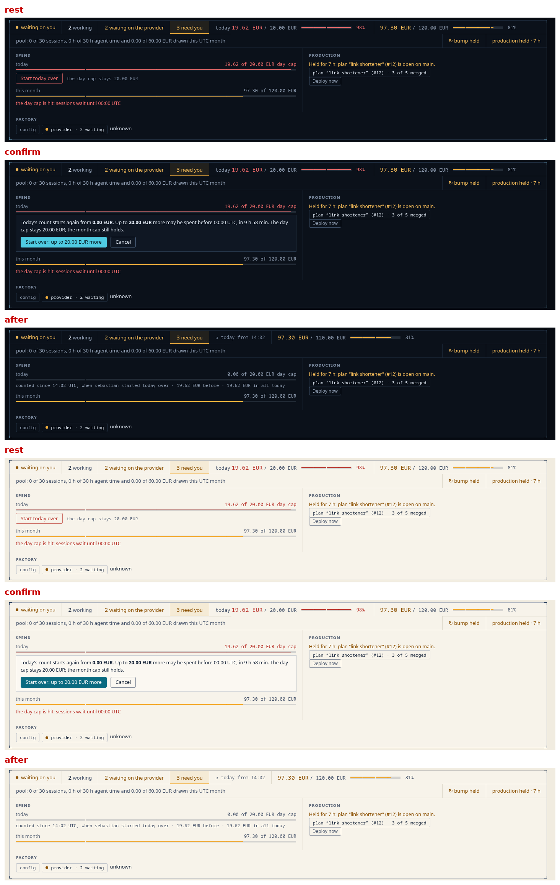
Why not the others: B (lift the day cap until 00:00) leaves only the month cap as a bound, today 1,500 EUR, so one press could let a loop spend most of a month in a day. C (allow an amount) asks for a number at the moment the owner wants none; its default is A anyway. D2 is one press faster but turns the read-only strip into a control panel, crowds it at 390 px, and its box covers the board.
| critic | A2 speed | safety | calm | trace | craft | D2 speed | safety | calm | trace | craft | pick |
|---|---|---|---|---|---|---|---|---|---|---|---|
| Gemini 2.5 Pro | 6 | 7 | 10 | 10 | 8 | 9 | 9 | 3 | 5 | 4 | A2 |
| GLM 5V Turbo | 6 | 9 | 10 | 9 | 8 | 9 | 8 | 3 | 6 | 5 | A2 |
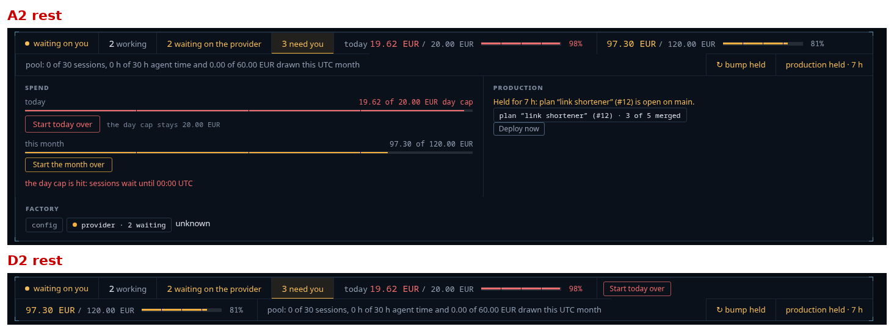
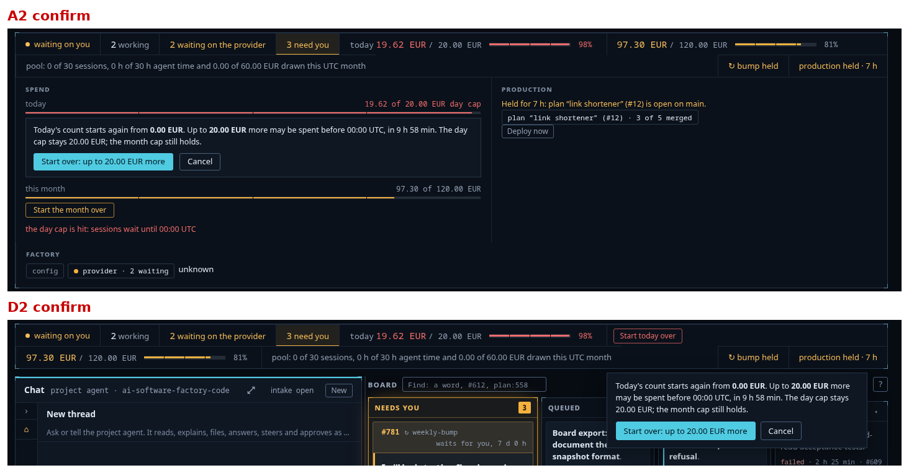
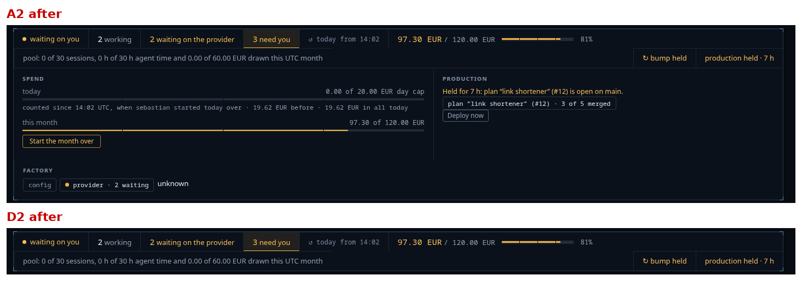
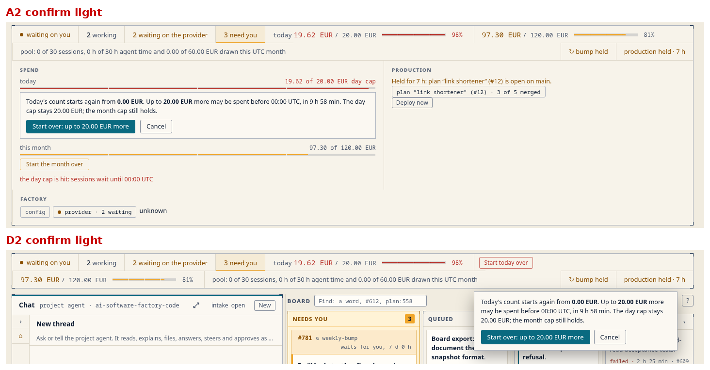
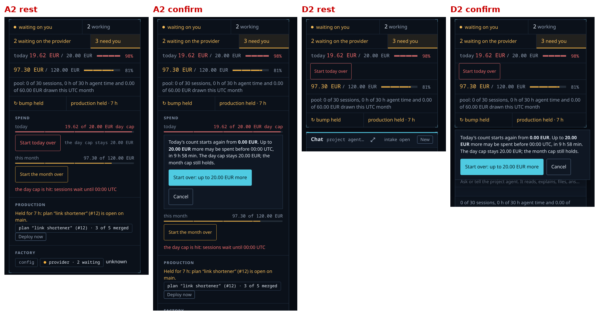
| critic | A | B | C | D | pick | runner-up |
|---|---|---|---|---|---|---|
| Gemini 2.5 Pro (speed/safety/model/trace/craft) | 5/9/9/8/9 | 5/9/8/10/9 | 3/4/5/6/6 | 10/9/9/8/2 | B | A |
| GLM 5V Turbo | 8/9/10/10/9 | 7/3/5/8/6 | 4/10/8/8/5 | 9/8/10/6/7 | A | D |
Overruled: Gemini's pick of B and its safety 9 for it. Lifting the day cap removes the bound the owner keeps the cap for; GLM's 3 is right. Gemini's "D's phone confirm is broken, showing an unrelated panel": the box shows and works, but it covers the strip's second row, the month figure included; that part stood and D2 moved the box below the strip. GLM's amber "override active" banner: amber already means "close to the cap" here, and the trace text passes 4.5:1 in both themes. Kept: a confirm button that names the money (GLM), the risk of the month's press beside the day's (Gemini, compare pass).
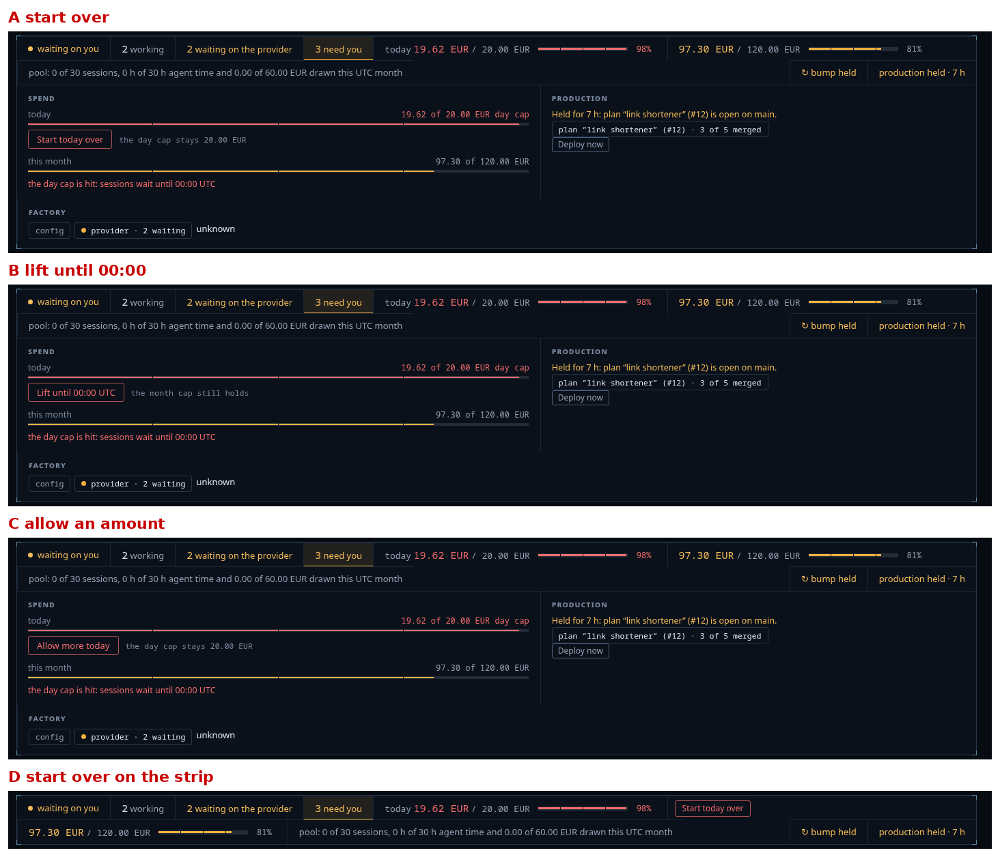
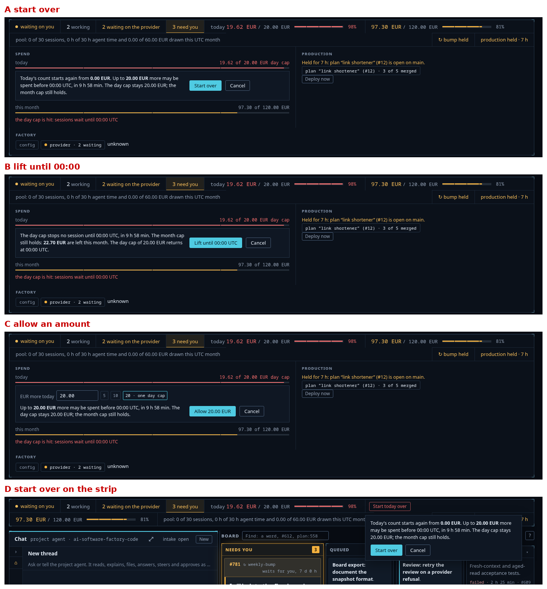
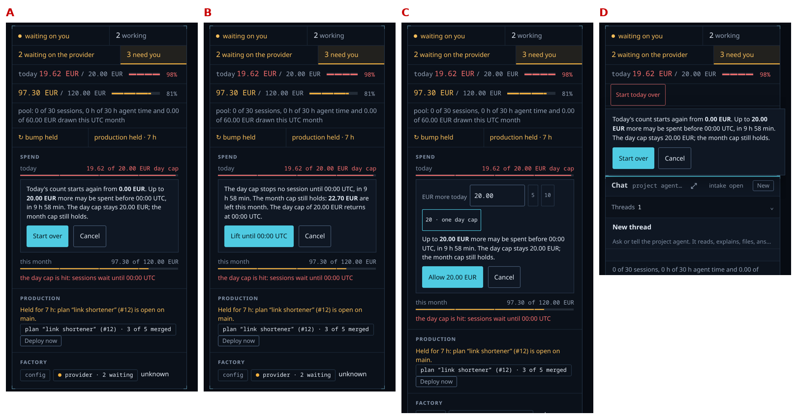
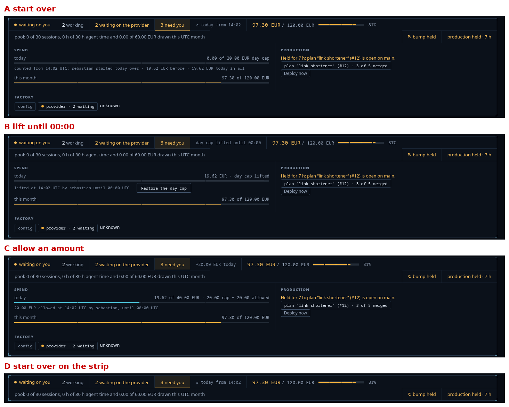
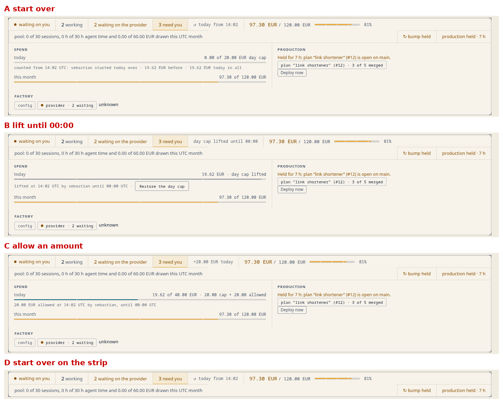
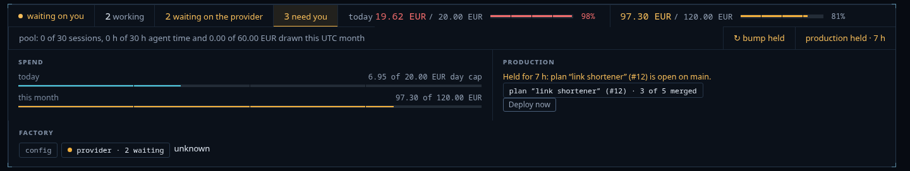
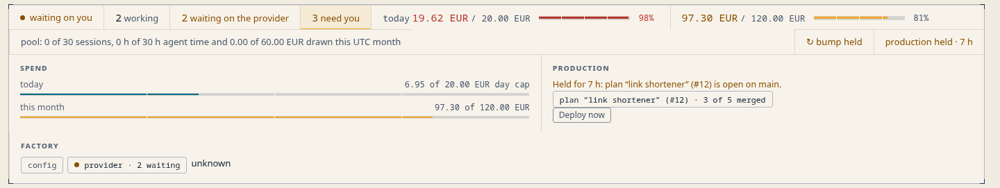